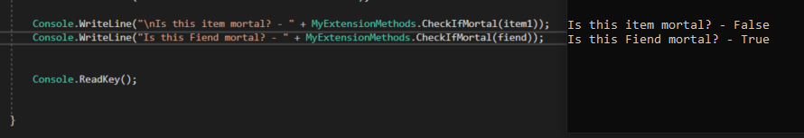

01 Einführung in Schnittstellen
Interfaces funktionieren im Grunde wie abstarkte Klassen. Man kann sie auch als Vertrag verstehen, der besagt: Jede Klasse die das Interface implementiert, muss alle Properties und Methoden des Interfaces implementieren. Schnittstelle oder Vererbung? Schnittstellen werden in C# häufig dazu genutzt Mehrfachvererbung (die in C# nicht möglich ist) darzustellen. Für die Entscheidung, ob ein Interface oder eine Klasse (Base Klasse) genutzt werden sollte, lässt sich generell sagen: Wenn die Baseklasse über keine implementierung verfügt und nur abstrakt ist, kann man i.d.R. ein Interface verwenden. Im Allgm. beschreiben Interfaces eine Can-Do Beziehung und Inheritance eine Is-A Beziehung.
02 Schnittstellen deklarieren und implementieren
Im Folgenden ein Beispiel einer Interface Implementierung. Der Hintergedanke ist hierbei der, dass wir viele verschiedene Wesen haben werden, die jedoch keine gemeinsame Basisklasse besitzen, da sie doch zu verschieden sind, wie z.B.: Menschen und Monster. Trotz ihrer unterschiedlichkeit haben beide Wesen eine Sache gemeinsam: Sie leben. Lebende Wesen können sterben oder leben und wir gehen jetzt einfach mal davon aus, dass all unsere sterblichen Wesen auch eine Idle-Animation besitzen.
public interface IMortal{
bool IsAlive{set; get;}
void PlayIdle(bool alive);
}
Nun wieder zurück zu unserem Monster. Unsere Basisklasse Monster implementiert nun das Interface IMortal. Das bedeutet, dass es auch die Methode PlayIdle und die Property IsAlive implementieren muss.
public class Monster : IMortal{
//Methoden und Klassen die Monster ohnehin schon besitzt
//....
//...
//..
//.
bool IsAlive{get; set;} //implementiert!
void PlayIdle (bool alive) { //Implementiert!
if (alive){
//Play Animation
}
else{
//stop playing an Animation
}
}
}
Und was hat uns das jetzt genutzt? Ganz einfach, wir wissen, dass jede Klasse, die das Interface IMortal implementiert (dne Vertrag eingeht) in jedem Fall eine Methode zum Prüfen des Status IsAlive und eine Methode um die Idle Animation abzuspielen besitzt!
03 Member einer Schnittstelle verdecken
Explicit Interface Implementation wird verwendet um dessen Member zu verdecken. Syntaktisch sieht dies wie folgt aus:
public interface IFaceIt{
void MethodA();
bool MethodB();
}
public class ThemInterfaces : IFaceIt{
void MethodA(){
//Mach etwas
}
//Diese Methode wird verdeckt
bool IFaceIt.MethodB(){
//Der Code inhier wird nur vom Interface selbst verwendet
}
}
würden wir dies nun testen wäre das Ergebnis das folgende:
ThemInterfaces testObj = new ThemInterfaces();
testObj.MethodeA(); //funktioniert
tesObj.MethodB(); //wirft einen Fehler (compile time error)
04 Typprüfung und -konvertierung
Wir können auch testen, ob ein anderes Objekt unser IMortal Interface implementiert. Wir gehen davon aus, dass wir eine Klasse namens Item angelegt hätten. Wir verwenden nun die sog. Single Cast Methode um zu prüfen, ob Item unser Interface implementiert. Also erweitern wir unsere statische Klasse.
public static bool CheckIfMortal(Object testThisObject){
//Wandelt Obj zu einem IMortal via TypeCast
//falls dieser Vorgang glückt, erhalten wir eien Referenz auf das Objekt, falls nicht, erhalten wir null
IMortal mortal = testThisObject as IMortal;
if(mortal != null){
return true;
}
else{
return false;
}
}
Wenn wir nun überprüfen, ob unsere Item Klasse ein IMortal interface implementiert, würden wir false als Rückgabeparameter erhalten.

Quellen und weiterführende Links
01 https://docs.microsoft.com/de-de/dotnet/csharp/language-reference/keywords/interface
https://softwareengineering.stackexchange.com/questions/108240/why-are-interfaces-useful
02 https://docs.microsoft.com/de-de/dotnet/csharp/language-reference/keywords/interface
03 https://hackernoon.com/hiding-members-via-explicit-interface-implementation-in-c-2c5u3oc1
https://gedgei.wordpress.com/2009/08/24/hiding-properties-and-methods-of-an-interface-in-c/
04 https://secondboyet.com/Articles/DoubleCastingAntiPattern.html
https://stackoverflow.com/questions/410227/test-if-object-implements-interface